Scratch から使い始める TurboWarp Plus Editor
いつもの SB3 を開き、コードの横でステージを動かしてみましょう。慣れたブロックで作品を編集しながら、Plus Editor ではどこを見ればいいか、スプライトが増えたときにどう探すか、作業しやすいように画面をどう変えられるかを「ボールのデモ」で試します。
日本語で Editor を開く · English guide
- Ball Demo.sb3 は節 1.1〜1.2 で使います。緑の旗でボールが20歩進むデモです。
- Ball Demo Plus.sb3 は節 1.3 から使います。同じデモに変数、リスト、メッセージ、クローンを加えています。
1. Scratch で使っていた画面はどこにある？
1.1 SB3 を開く
まずは、あなたが編集したい Scratch のプロジェクトファイルを用意してください。ここでは、Ball Demo.sb3 をダウンロードして開くことにします。
「ファイル」→「SB3ファイルを開く…」 から、ダウンロードしたファイルを開きます。画面左端のスプライト一覧で 「ボール」 を選ぶと、中央の編集パネルにそのスプライトのタブが開きます。
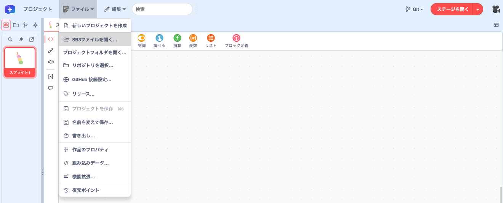
1.2 ステージを開く
右上の 「ステージを開く」の横の ▾ から 「引出しで表示」 を選びます。右に開いたステージの緑の旗を押すと、コードを見ながらボールの動きを確かめられます。青いブロックの 20 を 40 にすると、旗を一度押したときに進む距離が2倍になります。ステージを大きく見たいときは、同じメニューから 「別ウィンドウで表示」 も選べます。
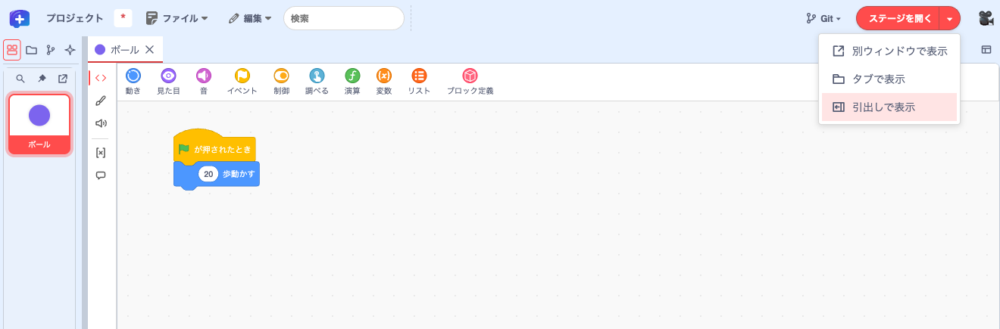
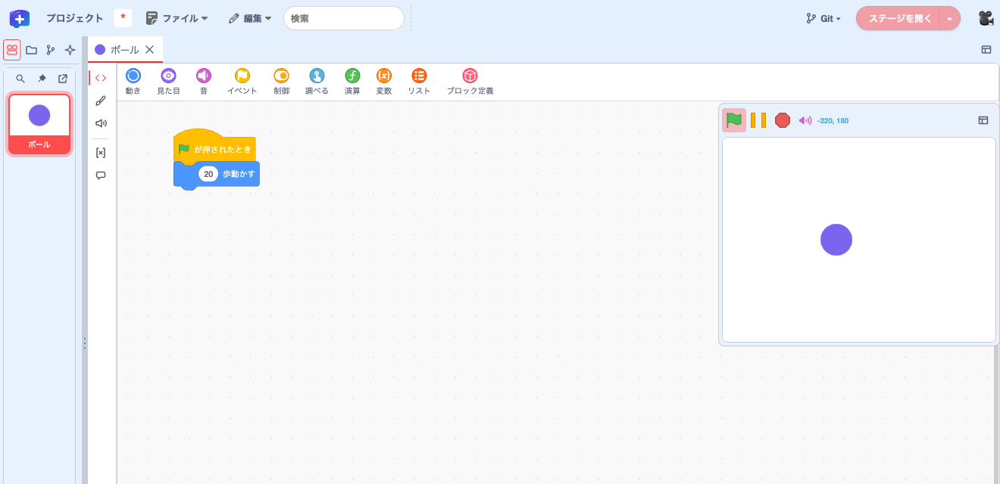
1.3 画面左端のスプライト一覧を使う
ここからは Ball Demo Plus.sb3 を開きます。Scratch で画面右下にあった スプライト一覧は画面左端 に移っています。左上で別の表示を開いている場合は、いちばん左の 「スプライト一覧」 アイコンを押します。
一覧とコードの間の 境界を左右にドラッグ すると、使える範囲で幅を調整できます。スプライトが多い作品では、広げるとタイルを複数列に並べられます。ピン で一覧を固定できます。固定を外すと、ポインターを離したときに一覧が畳まれ、左端に戻すと開きます。
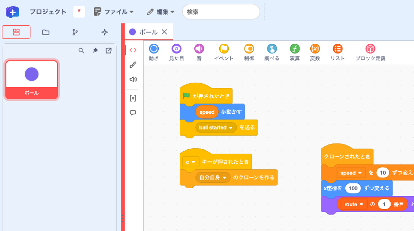
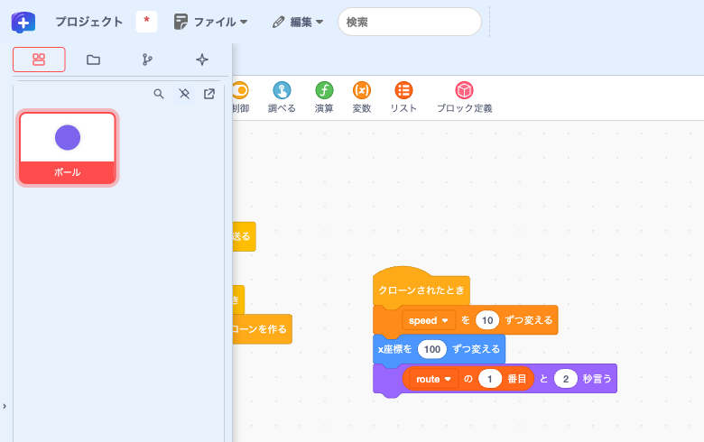
一覧を別の画面に置きたいときは、ピンの横の 「アンドック」 を押します。別ウィンドウにした状態が記録されているときは、同じボタンが 「別画面で開き直す」 になります。別ウィンドウでもスプライトを選べます。一覧を戻すときは、別ウィンドウ右上のボタンを押します。
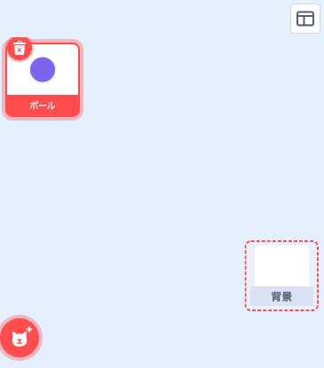
1.4 スプライト一覧から選んだ対象をタブで編集する
画面左端の一覧からスプライトや背景を選ぶと、それぞれが編集パネル上部のタブで開きます。「ボール」を開いたまま、一覧の下にある 「背景」 を選んでみましょう。二つのタブを開いたまま、上部の 「ボール」 と 「背景」 を押すだけで編集対象を切り替えられます。複数のタブを開きながら作業でき、パネルを分割すれば横に並べて編集できます。
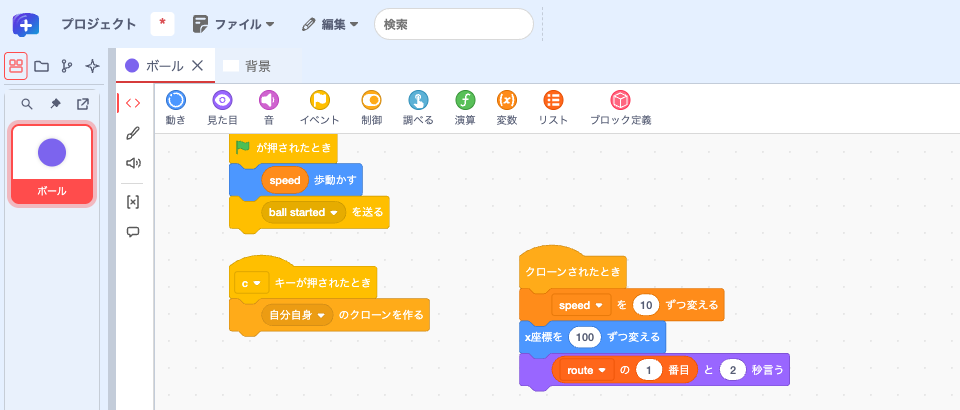
1.5 スプライト編集パネルをボタンで切り替える
編集パネルの左端には上から コード、コスチューム、音、変数など、メッセージ が並びます。背景のタブでは、コスチュームの位置が 「背景」、変数の位置が 「グローバル変数」 になります。コスチュームや音を開くと、ペインの上部に今選んでいる編集内容の見出しが表示されます。アイコンの名前が分からなければ、ポインターを置いて確認できます。
「ボール」のタブで筆のアイコンを押すと、紫のボールのコスチュームを編集できます。スピーカーのアイコンを押すと、同じスプライトの音の画面に切り替わります。このデモでは音は空です。左端の 「コード」 を押すとブロックに戻れます。
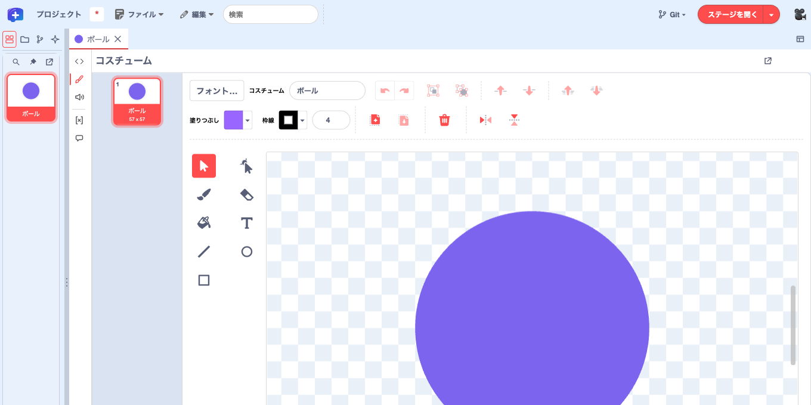
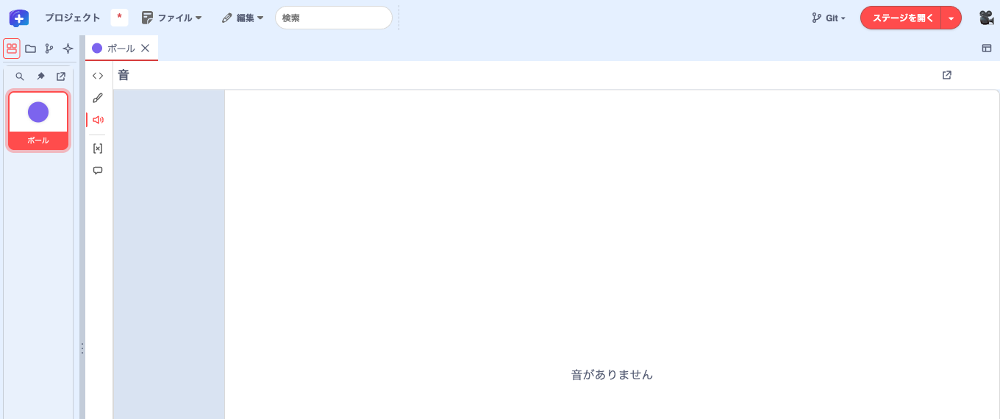
2. スプライトのプロパティと変数を使う
2.1 プロパティで位置・表示・向きを変える
「ボール」の左側で [x] のアイコン「変数など」 を押すと、「スプライトのプロパティと変数」 が開きます。上部でスプライト名、位置（x・y）、大きさ、向きを編集できます。目のアイコンで表示、斜線付きの目で非表示にできます。ステージを開くと、変更の結果を確かめられます。右側の操作に引き出しが重なるときは、いったん右端に畳みます。
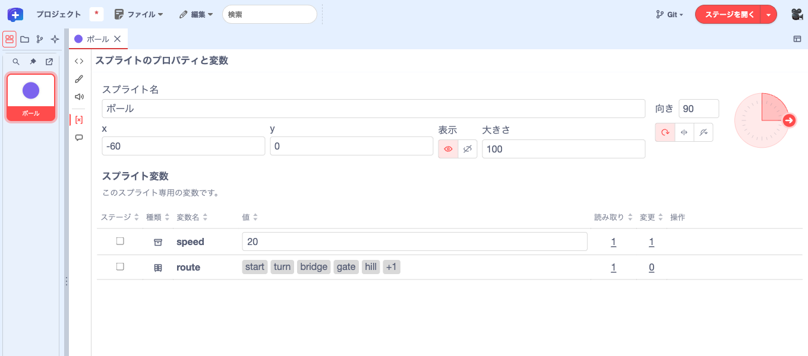
右の 向きのダイヤルで、円周の矢印を右（90°）から上（0°）へドラッグします。円形のボールでも、旗を押すと右に進んでいた動きが上向きに変わるので、違いが分かります。ダイヤルの横の数値欄でも指定できます。下の三つのアイコンは 自由に回転／左右のみ／回転しない の切り替えです。次の練習の前に向きを 90、位置を x = −60、y = 0 に戻します。
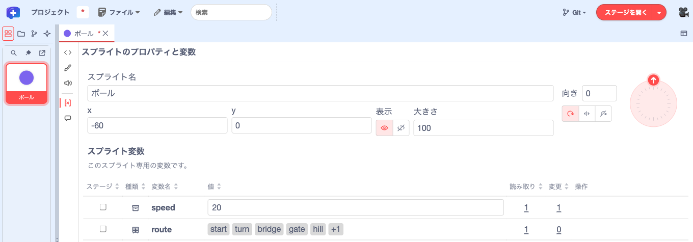
2.2 変数を変更し、その変数を使うブロックを表示する
同じパネルの 「スプライト変数」 には、ボール専用の変数やリストが並びます。ボールの進む距離を決める speed を 20 から 40 に書き換え、Enter で確定します。緑の旗で進む距離を比べたら、次の練習に備えて speed を 20 に戻します。
「読み取り」列の数字を押すと、その値を使うブロックだけが検索結果に出ます。speed の読み取り 1 を押し、結果を選ぶと、緑の旗のスクリプトにある「歩動かす」に移動します。「変更」列の 1 からは、クローンの speed を増やす別のブロックへ移動できます。行にポインターを重ねると名前の変更や削除の操作が現れます。
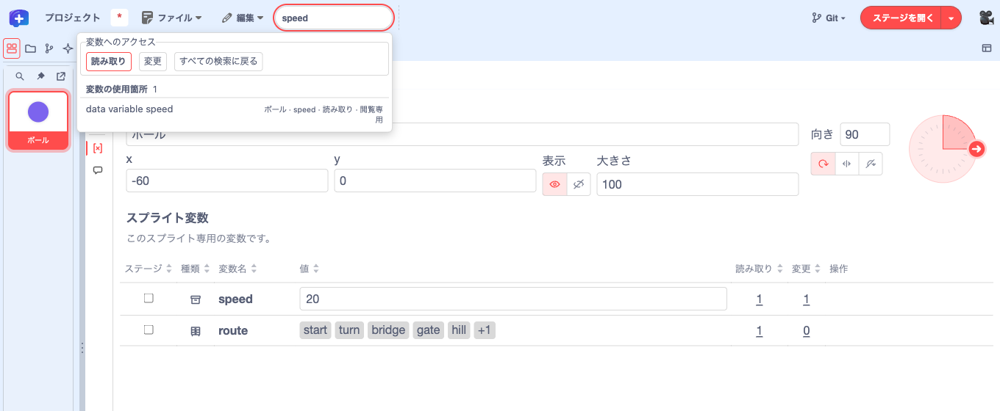
作品全体で共有する変数を見るには、左下の 「背景」 タイルを選び、「グローバル変数」 を開きます。rounds の行の 「ステージ」列にチェックを入れると、実行中の値をステージに表示できます。
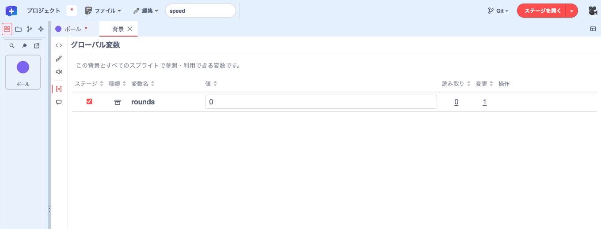
2.3 リストの中身をまとめて編集する
「ボール」のタブに戻り、左側の「変数など」を開きます。
一覧の 「種類」 列では、変数は箱、リストは引き出しのアイコンです。「種類」や「読み取り」などの見出しを押すと、表を並べ替えられます。route はクローンが最初に読み上げる言葉を入れたリストです。表には先頭5項目が並び、+1 は残りが1項目あることを示します。
route の行にポインターを重ねて 「編集」 を押します。
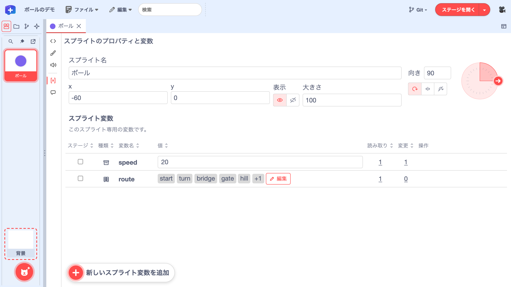
1番目の start を checkpoint に変更します。3番目の bridge の右にある上矢印を押すと、2番目に移動します。ごみ箱での削除や 「項目を追加」 もできます。変更を破棄するには 「キャンセル」 を押します。
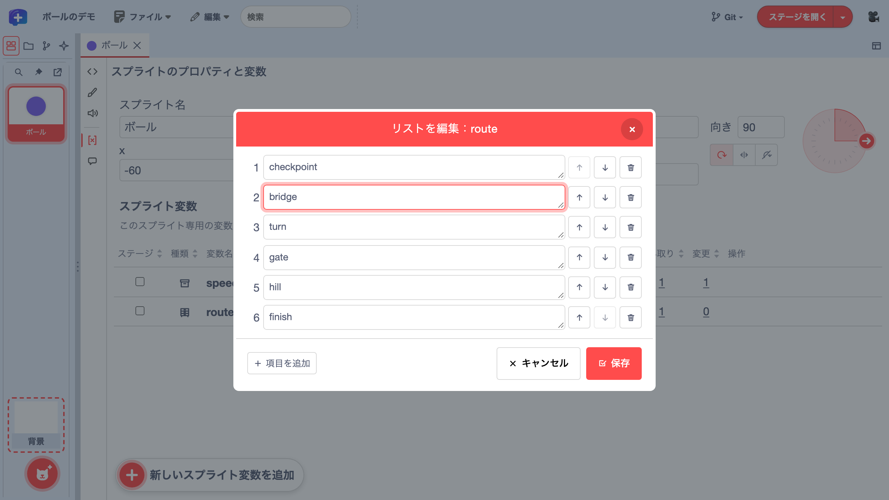
右下の 「保存」 を押すと、表の先頭に checkpoint → bridge → turn が表示されます。変更した作品をファイルに残す手順は 4.7 編集した作品を SB3 で保存する を参照してください。
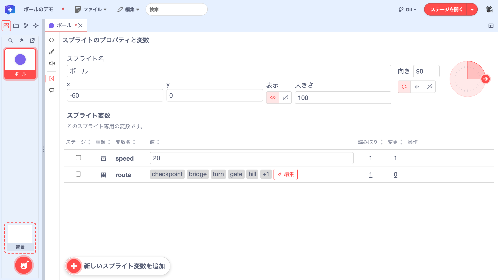
空のリストを作るには、パネル左下の 「新しいスプライト変数を追加」 を押し、「リスト」 タブで名前を入力して 「作成」 を押します。作品全体で共有するリストは、背景の「グローバル変数」から同じように作れます。
2.4 クローンを選んで個体ごとの値を見る
「ボール」のタブを開き、右にステージを引き出しで表示します。ステージの白い部分を一度クリックして C キーを押すと、右にもう一つボールが現れます。クローンは実行中に作れるスプライトのコピーです。このクローンは作られたときに自分の speed を10増やし、route の先頭の言葉を吹き出しに出します。
「変数など」 を開き、見出し右の 「1」 を選びます。speed が 30 のクローンを表示しています。値を 35 に変え、「元のスプライト」 に戻すと、そちらは 20 のままです。クローンの位置やリストも同様に確認・編集できます。個体の値や位置への変更は実行中だけ有効です。6体以上になると、番号の選択リストと左右の矢印で切り替えられます。
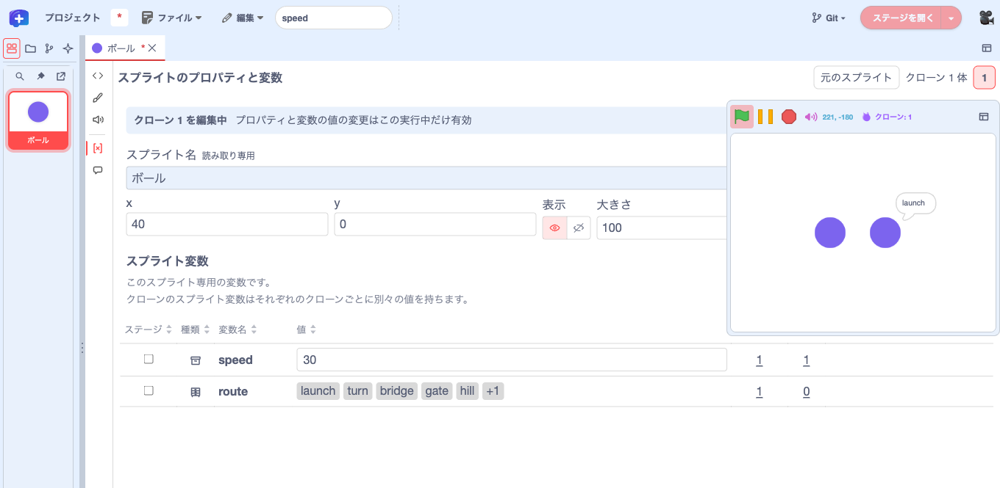
3. メッセージの流れをたどる
3.1 スプライトが送信するメッセージを受信するブロックを表示する
「ボール」の左端にある吹き出しアイコン 「メッセージ」 を押します。「送信」「受信」 に分かれて、選んだ対象がどのメッセージを使うかが並びます。ボールは緑の旗で動いた直後に ball started を送ります。「ブロック」 欄には送信ブロックと、それが入っているスクリプトの開始ブロックが表示されます。下線付きの ball started を押すと、送信ブロックに移動できます。
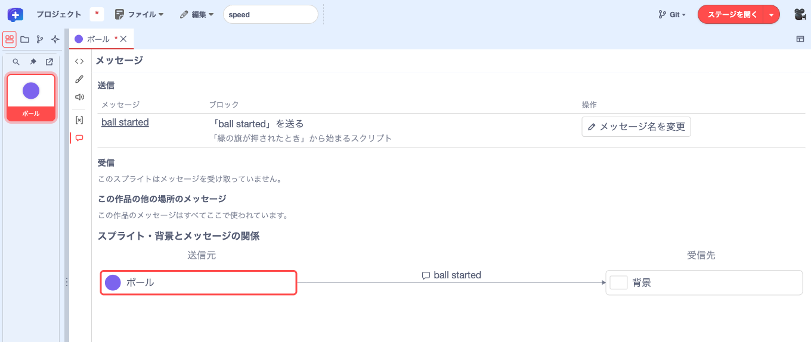
受信ブロックを表示するには、送信元の 「メッセージ」 パネルに戻り、関係図の矢印の先にある 「背景」 を押します。背景の 「メッセージ」 パネルを開き、「受信」 欄の下線付きの ball started を押します。コード画面に移動し、背景が rounds を1増やすスクリプトの受信ブロックが表示されます。
3.2 矢印で受信先を見つけ、背景から全体を見る
同じパネルの下にある関係図では、矢印が送信元から受信先を指します。矢印の上がメッセージ名で、選んでいる対象には太い枠が付きます。このデモでは ボール → 背景 の矢印に ball started が表示されます。
背景の 「メッセージ」 パネルでは、背景の受信一覧に加え、作品全体の送受信が関係図に表示されます。
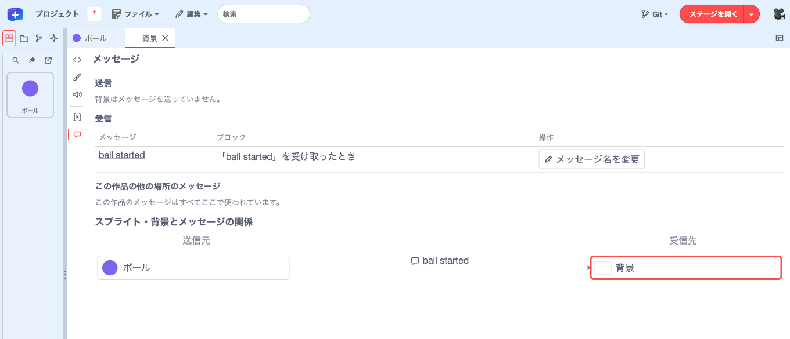
3.3 メッセージ名を作品全体で変える
ball started の行の 鉛筆アイコン「メッセージ名を変更」 を押します。たとえば ball moved と入力し、「メッセージ名を変更」 で確定します。作品全体で共有する名前なので、ボールの送信ブロックと背景の受信ブロックが一緒に変わります。関係図で新しい名前を確認するには、いったん「コード」に切り替えてから「メッセージ」を開き直します。入力中の変更を取り消すときは 「キャンセル」 を押します。
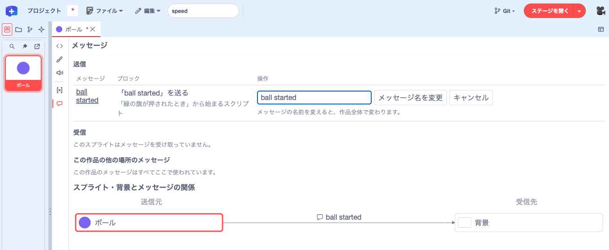
4. コードを探す、広げる、使い回す
4.1 効率的な動線でブロック編集をする
コード画面の上に並ぶ 「動き」 などのカテゴリを押すと、その下にブロックの小窓が開きます。使うブロックはそこからコード領域にドラッグします。小窓の右下のハンドルで幅と高さを変え、一覧の中をスクロールしてみましょう。サイズはブラウザーにカテゴリ別で保存され、作業中のスクロール位置もカテゴリ別に覚えます。 「見た目」を開いてから「動き」に戻ると、続きから探せます。
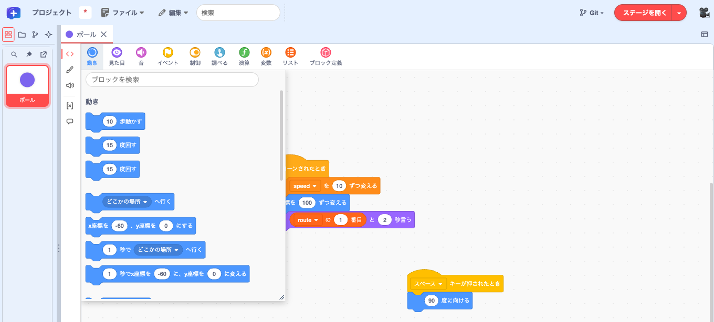
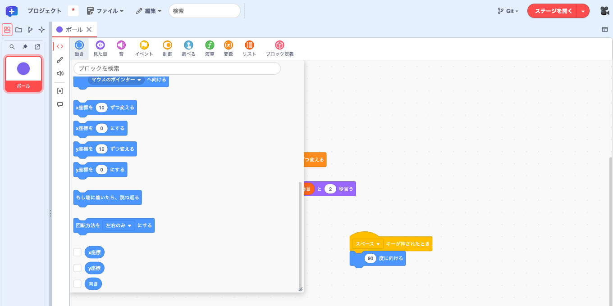
パレットの検索は そのカテゴリから追加するブロック を探すときに使います。上のメニューバーの検索は 作品ですでに使っているブロック を探す入口です。元のデモで「歩動かす」を検索し、結果を選ぶと、ボールのコードに該当するブロックが表示されます。
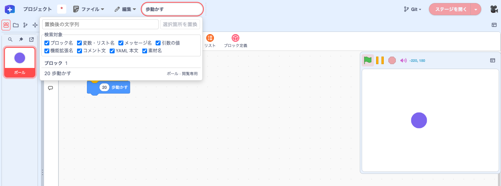
4.2 ミニマップで離れたコードへ移動する
「ボール」の コード画面にポインターを置くと、右下に小さなコードの地図が現れます。枠は今見えている範囲です。Ball Demo Plus.sb3 では、旗、Cキー、クローンが作られたとき、スペースキーの各スクリプトが地図に表示されます。
地図の離れた場所をクリックするか、枠をドラッグして表示範囲を移します。下の −／＋ で縮小・拡大できます。長くなったコードでも、どちらへスクロールすればよいか見当がつきます。
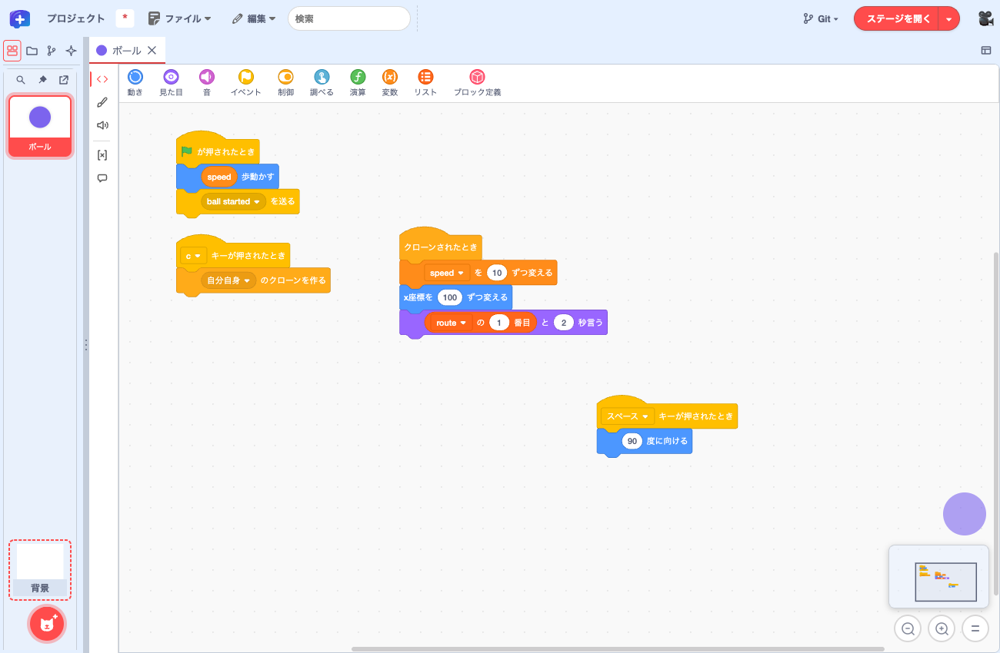
4.3 Z配置・N配置でコードを順に読む
コード領域の 空白を右クリックし、「コードの並びの見え方を変更する」 を開きます。Z配置 は元の配置を上の段から左→右の順に、N配置 は左の列から上→下の順にたどり、スクリプトを縦に表示します。離れたスクリプトを順番に読みたいときに使えます。「通常配置の見え方」 を選ぶと元の座標で編集できます。
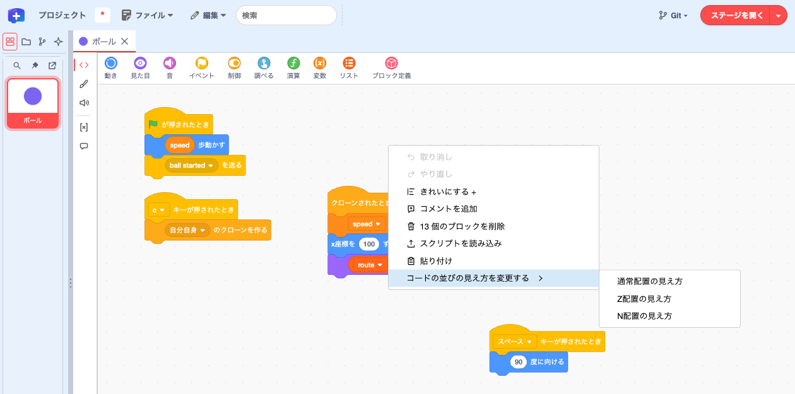
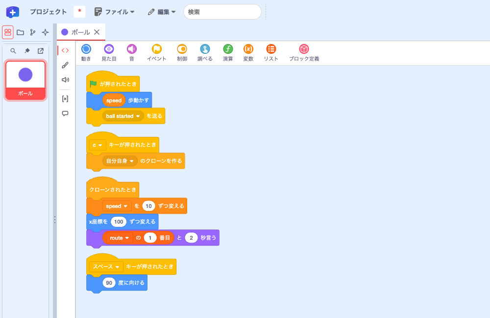
座標も整理するには、通常配置に戻り、上の 「編集」→「コードブロックの再配置」 を選びます。順序と方向を選ぶと移動先をプレビューできます。「再配置する」 を押すと、プレビューの位置に移ります。
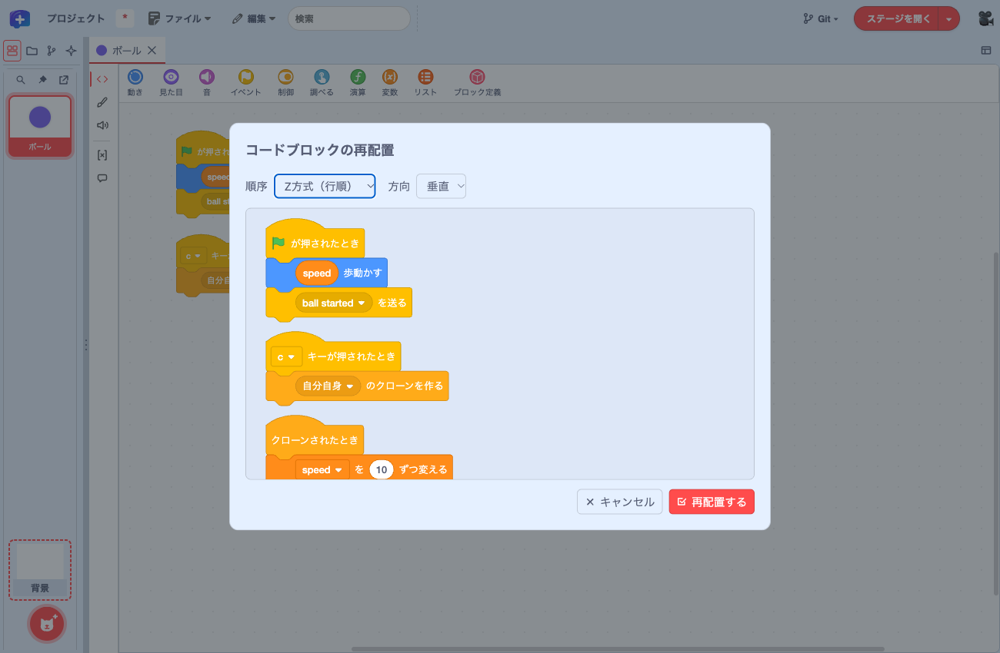
4.4 パネルを横に分割して並べて編集する
コード画面右上の 「編集パネルのレイアウト」→「パネルを横に分割」 を選ぶと、同じスプライトのコードが二つのペインに並びます。両側で別々の場所を表示していても、片方で編集した内容はもう片方に反映されます。スクロール位置と拡大率はそれぞれ変えられます。
大きな作品では、左に初期化のコードを置いたまま、右でイベントのスクリプトを編集できます。片方を閉じるときは、その側の 「編集パネルのレイアウト」→「この分割パネルを閉じる」 を選びます。
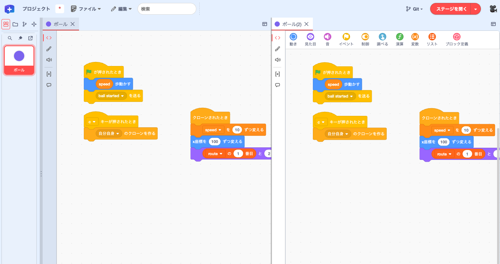
4.5 タブを切り替えてスクリプトをコピーする
左の一覧で「ボール」を右クリックして 「複製」 し、練習用に「ボール2」を作ります。元の「ボール」タブで、離れた場所にある 「スペースキーが押されたとき」 のスクリプトを右クリックし、「コピー」 を選びます。「ボール2」タブを開いてコード画面に移り、空白部分を右クリックして「貼り付け」 を選ぶと、つながったブロックの一組が追加されます。複製直後は同じスクリプトが一組あるので、貼り付けると二組に増えます。
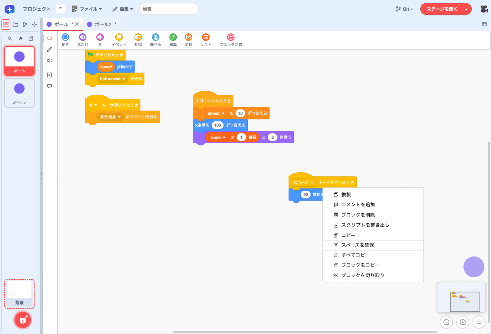
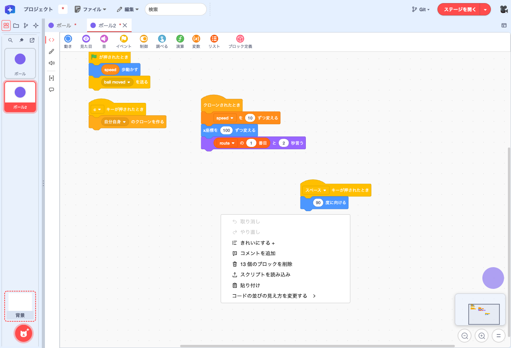
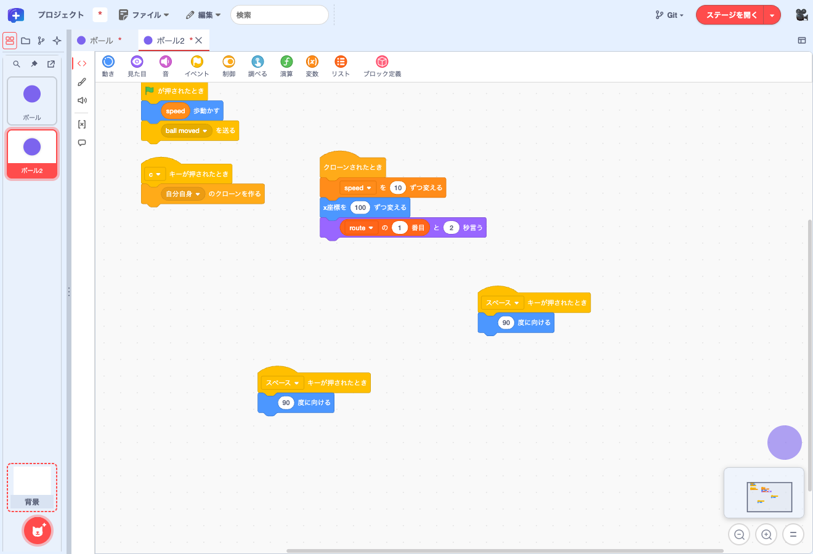
4.6 左のスプライト一覧へドラッグして別タブにコピーする
同じ作品でもう一つのスプライトに動きを渡すときは、コードから直接ドラッグできます。
- 左の スプライト一覧 を開き、元の「ボール」タブに戻ります。
- スペースキーのスクリプトの いちばん上の黄色いブロック をつかみます。キーを選ぶメニューを避け、ブロックの文字のあたりからドラッグします。左の一覧で 「ボール2」のタイル に重ね、タイルが反応したところで離します。
- 上の 「ボール2」タブ を開いてコードを確認します。スクリプトのコピーが追加され、元の「ボール」にも一組残ります。
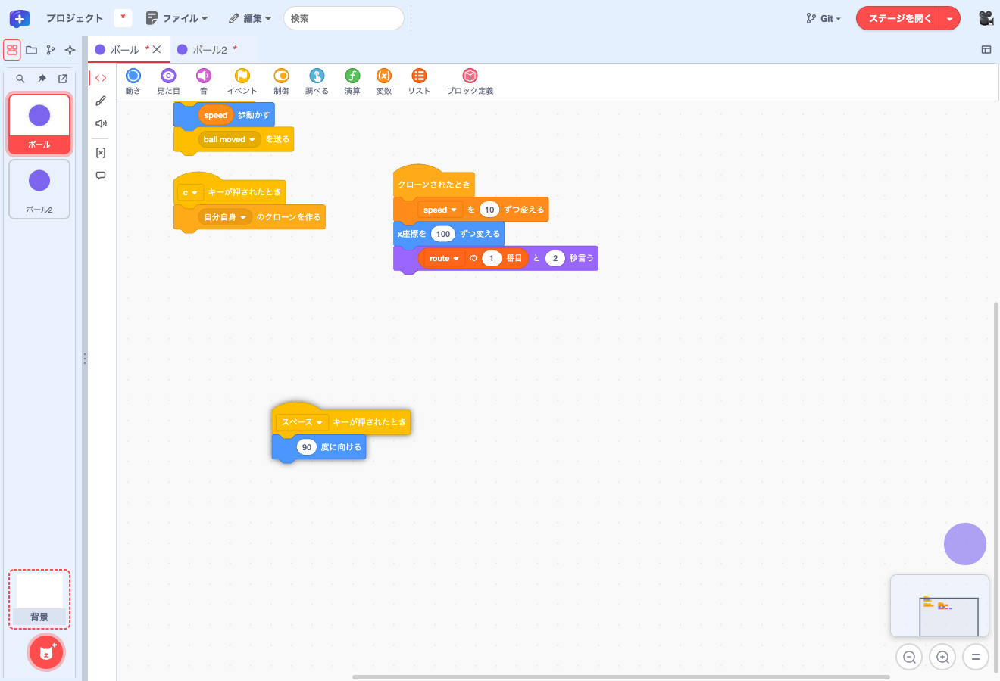
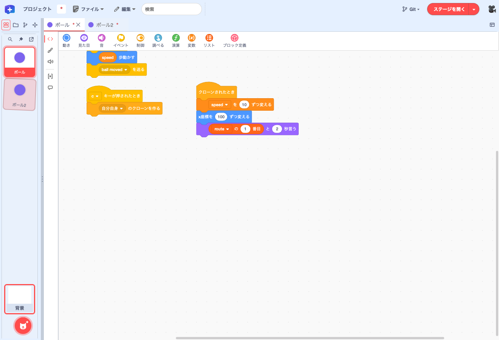
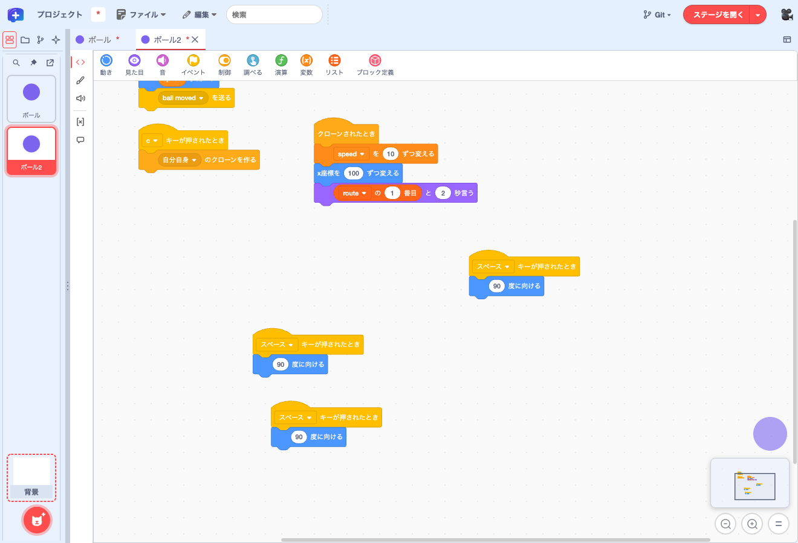
4.7 編集した作品を SB3 で保存する
編集を終えたら、作品を SB3 ファイルとして保存できます。「ファイル」→「名前を変えて保存…」 を選び、作品名を入力します。保存形式は 「SB3（現在の格納方式）」 を選び、右下の 「保存先を選ぶ…」 から保存します。
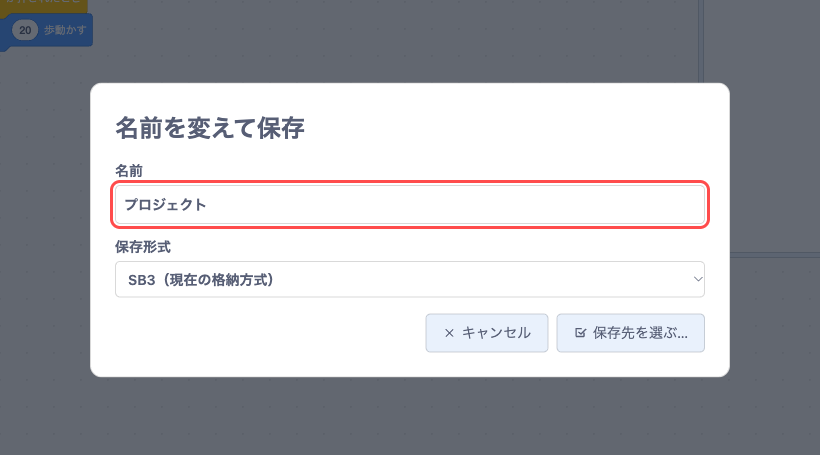
次に進む
作品をフォルダで保存する方法や、GitHub と連携する手順は、次のガイドで紹介しています。